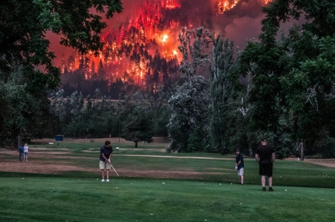
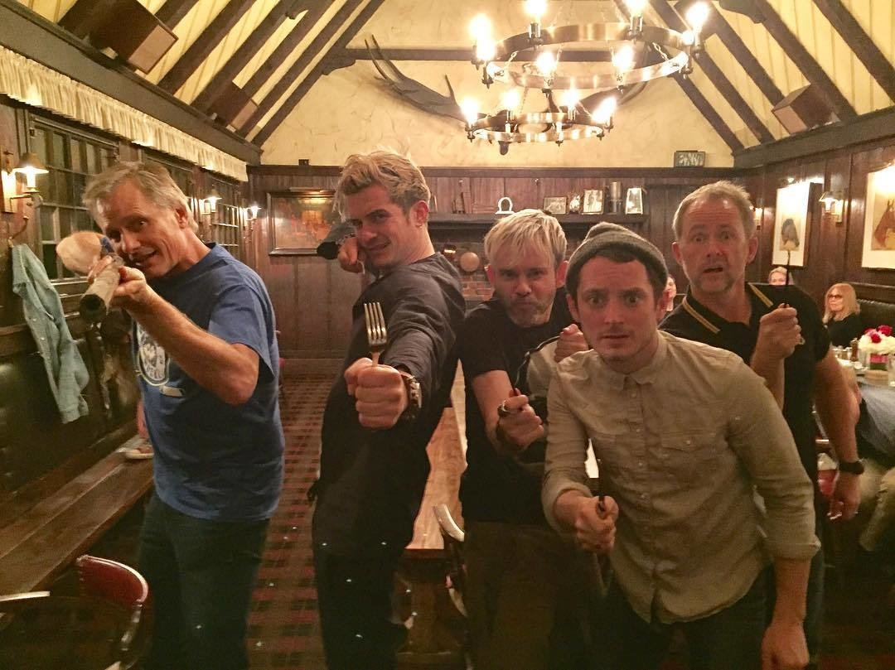

What are the most memorable photographs you have seen in the news this year? What about them was so striking to you?
What does looking back at the year in pictures make you think? How does it make you feel?
What story do these photos tell of the year 2017? Are there any moments that you think are missing from this compilation? If so, what are they?
What are your favorite photos from the collection and why?
If you were to make a “Year in Pictures” of your own year, which photos would you choose? How do these images illustrate the most significant moments of your 2017?
 The original article is The Year in Pictures 2017.